wmtask_epoch_compare__direct_sum_cayley_perareaautodim__lc_x_obsnoisescale_sweepProject: WMTask_identity_encoder_verification
Launched: 2026-05-04T06:00:27Z
Completed: 2026-05-04T14:38:35Z
Outcome: complete_clean
Git: latent-JacobianODE @ c28bed8
Expected runs: 21
wmtask_epoch_compareDescription
WMTask fully-observed (N1=N2=64), DirectSum coupling encoder with per-area PCA-autodim, additive coupling + Cayley orthogonal mixers + near-identity init, TF-coupled LR. Combined dataloader pools trajectories from epoch=1 and epoch='final' checkpoints of the same BiologicalRNN; condition_dim=1 with values {-1: epoch=1, +1: final} threaded through encoder conditioners + dynamics MLP. Normalization + obs_noise_scale calibration computed on the concatenated data. Single-stage; sweep over loop_closure_weight + obs_noise_scale.
Hypothesis
A single JacobianODE that conditions on training-stage should be able to capture both the epoch-1 and final-epoch dynamics of the same biological RNN with one shared encoder + dynamics MLP, exposing the difference between the two as a function of c. This validates the multi-condition framework end-to-end and gives us a comparison axis where we know the underlying system is "the same network with different weights" — a controlled instance of within-system change.
Success criteria
Swept axes (4): data.postprocessing.generalized_variance, model.n_target_dims_per_block_pca_cum_var, training.lightning.loop_closure_weight, training.lightning.obs_noise_scale
Chosen run (by best_traj_loss): 44yjbq6x — traj_loss=0.00256, MASE=0.6732, R²=0.9950, LC loss=12.016, epoch=50.0
Swept-axis values at chosen run: data.postprocessing.generalized_variance=0.0065177 · model.n_target_dims_per_block_pca_cum_var=[0.9908354217288812, 0.9910537774958704] · training.lightning.loop_closure_weight=1.0e-06 · training.lightning.obs_noise_scale=0.05
Runs analyzed: 21 (expected 21)
| run_idx | run_id | data.postprocessing.generalized_variance |
model.n_target_dims_per_block_pca_cum_var |
training.lightning.loop_closure_weight |
training.lightning.obs_noise_scale |
best_traj_loss | best_MASE | R² | LC loss | epoch |
|---|---|---|---|---|---|---|---|---|---|---|
| 5 | 44yjbq6x |
0.0065177 | [0.9908354217288812, 0.9910537774958704] | 1.0e-06 | 0.05 | 0.00256 | 0.6732 | 0.9950 | 12.016 | 50.0 |
| 6 | 5qq2ih61 |
0.0065177 | [0.9908354217288812, 0.9910537774958704] | 1.0e-05 | 0 | 0.00261 | 0.6805 | 0.9949 | 3.876 | 53.0 |
| 7 | tk1isw7j |
0.0065177 | [0.9908354217288812, 0.9910537774958704] | 1.0e-05 | 0.01 | 0.00268 | 0.6874 | 0.9947 | 4.624 | 49.0 |
| 8 | cpb2xljt |
0.0065177 | [0.9908354217288816, 0.9910537774958708] | 1.0e-05 | 0.05 | 0.00274 | 0.6914 | 0.9946 | 4.869 | 35.0 |
| 3 | hjf2dkkq |
0.0065177 | [0.9908354217288816, 0.9910537774958708] | 1.0e-06 | 0 | 0.00280 | 0.6998 | 0.9945 | 8.569 | 36.0 |
| 2 | 62dkknxe |
0.0065177 | [0.9908354217288816, 0.9910537774958708] | 0 | 0.05 | 0.00280 | 0.6989 | 0.9945 | 16.065 | 31.0 |
| 1 | bv0qk4ah |
0.0065177 | [0.9908354217288816, 0.9910537774958708] | 0 | 0.01 | 0.00282 | 0.7036 | 0.9944 | 15.788 | 37.0 |
| 9 | 7lqmrnlb |
0.0065177 | [0.9908354217288816, 0.9910537774958708] | 1.0e-04 | 0 | 0.00284 | 0.7047 | 0.9944 | 0.971 | 36.0 |
| 11 | 21uo87i5 |
0.0065177 | [0.9908354217288816, 0.9910537774958708] | 1.0e-04 | 0.05 | 0.00284 | 0.7018 | 0.9944 | 1.286 | 35.0 |
| 0 | pw1120fm |
0.0065177 | [0.9908354217288816, 0.9910537774958708] | 0 | 0 | 0.00284 | 0.7043 | 0.9944 | 13.205 | 34.0 |
| 4 | ov6v517m |
0.0065177 | [0.9908354217288816, 0.9910537774958708] | 1.0e-06 | 0.01 | 0.00288 | 0.7074 | 0.9943 | 10.206 | 36.0 |
| 10 | 7hassahu |
0.0065177 | [0.9908354217288816, 0.9910537774958708] | 1.0e-04 | 0.01 | 0.00297 | 0.7178 | 0.9942 | 1.150 | 34.0 |
| 12 | xlcjrnoa |
0.0065177 | [0.9908354217288816, 0.9910537774958708] | 0.001 | 0 | 0.00333 | 0.7554 | 0.9935 | 0.200 | 36.0 |
| 14 | yuo9l1gn |
0.0065177 | [0.9908354217288816, 0.9910537774958708] | 0.001 | 0.05 | 0.00345 | 0.7659 | 0.9932 | 0.290 | 34.0 |
| 13 | 6lr54gri |
0.0065177 | [0.9908354217288816, 0.9910537774958708] | 0.001 | 0.01 | 0.00367 | 0.7885 | 0.9928 | 0.262 | 32.0 |
| 15 | nbzpddye |
0.0065177 | [0.9908354217288816, 0.9910537774958708] | 0.01 | 0 | 0.00534 | 0.9270 | 0.9895 | 0.037 | 33.0 |
| 16 | amchzs04 |
0.0065177 | [0.9908354217288812, 0.9910537774958704] | 0.01 | 0.01 | 0.00763 | 1.1064 | 0.9851 | 0.138 | 52.0 |
| 18 | lczdbkf3 |
0.0065177 | [0.9908354217288816, 0.9910537774958708] | 0.1 | 0 | 0.00799 | 1.1037 | 0.9844 | 0.003 | 37.0 |
| 17 | 5v6vplqq |
0.0065177 | [0.9908354217288816, 0.9910537774958708] | 0.01 | 0.05 | 0.00869 | 1.1613 | 0.9830 | 0.111 | 34.0 |
| 20 | h8f1x5b5 |
0.0065177 | [0.9908354217288816, 0.9910537774958708] | 0.1 | 0.05 | 0.05666 | 2.5585 | 0.8912 | 0.026 | 10.0 |
| 19 | xo7u9le6 |
0.0065177 | [0.9908354217288816, 0.9910537774958708] | 0.1 | 0.01 | 0.05806 | 2.6000 | 0.8885 | 0.048 | 10.0 |
obs_noise_scale| obs_noise_scale | Best LC weight | Best traj loss | MASE at best | R² | LC loss | epoch |
|---|---|---|---|---|---|---|
| 0.0 | 1.0e-05 | 0.00261 | 0.6805 | 0.9949 | 3.876 | 53.0 |
| 0.01 | 1.0e-05 | 0.00268 | 0.6874 | 0.9947 | 4.624 | 49.0 |
| 0.05 | 1.0e-06 | 0.00256 | 0.6732 | 0.9950 | 12.016 | 50.0 |
| Criterion | Verdict | Note |
|---|---|---|
| All cells train without divergence (no NaN train loss) | Unknown | |
| val/trajectory_loss within ~2x of the existing single-checkpoint wmtask_direct_sum_additive Cayley sweep at the matching cell | Unknown | |
| Latent trajectories at c=-1 and c=+1 are visibly different on the same trial (encoder respects the condition) | Unknown | |
| Encoder & dynamics MLP weights both have nonzero condition-input gradients (the conditioning is actually learned) | Unknown |
Automated verdicts use simple numeric-threshold parsing and may mis-classify qualitative criteria. The Discussion section below takes precedence.
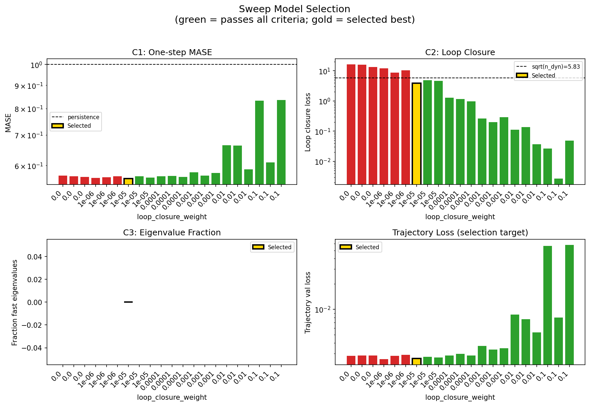
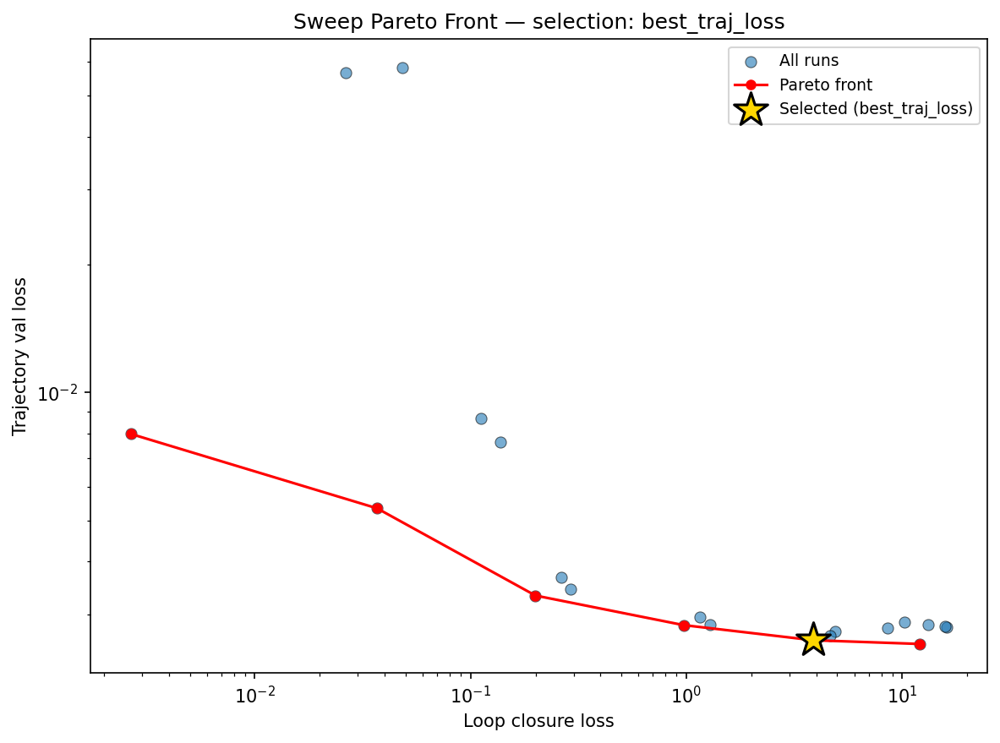
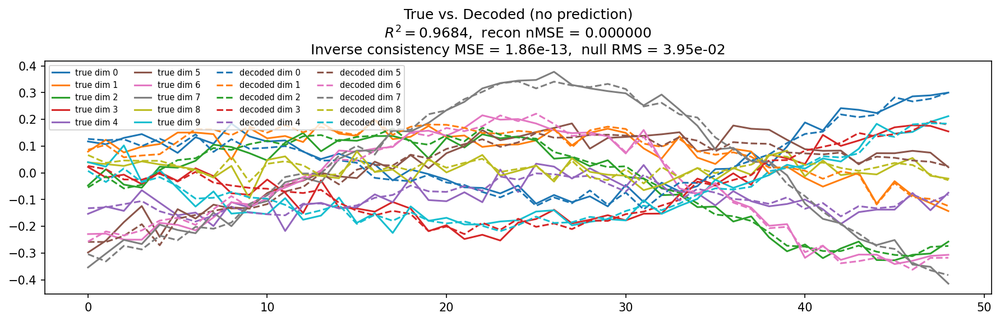
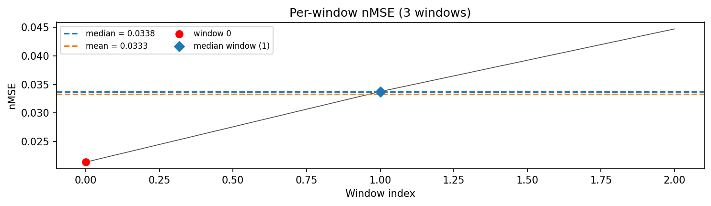
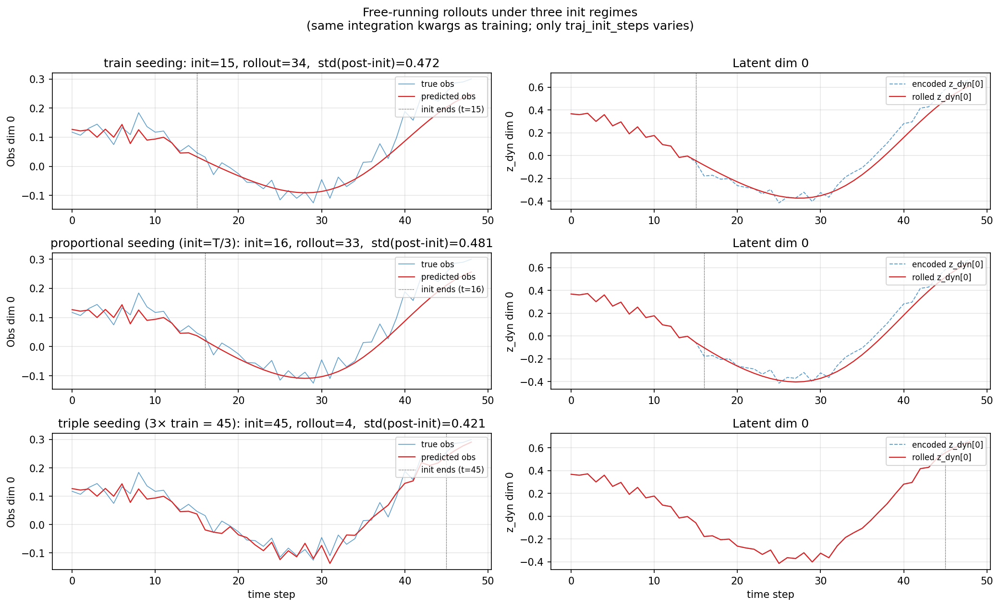
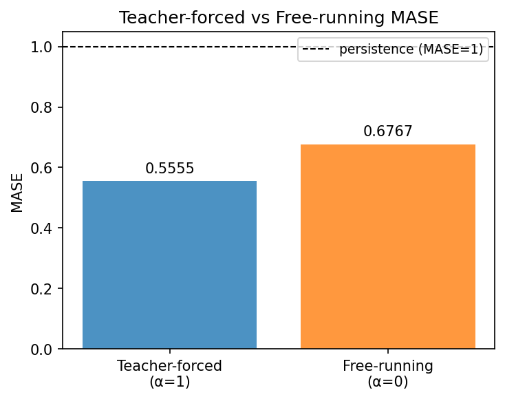
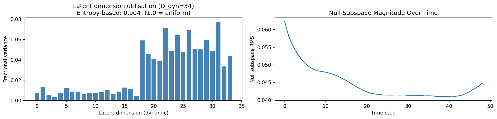
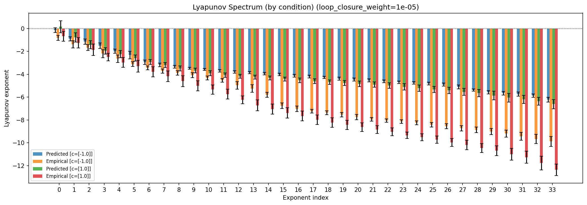
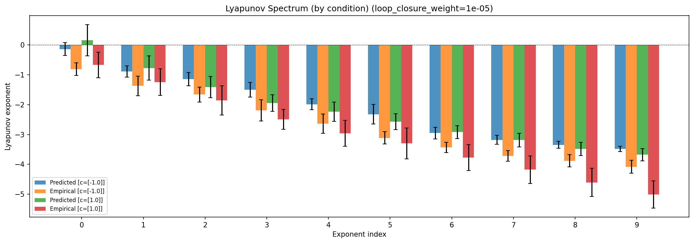
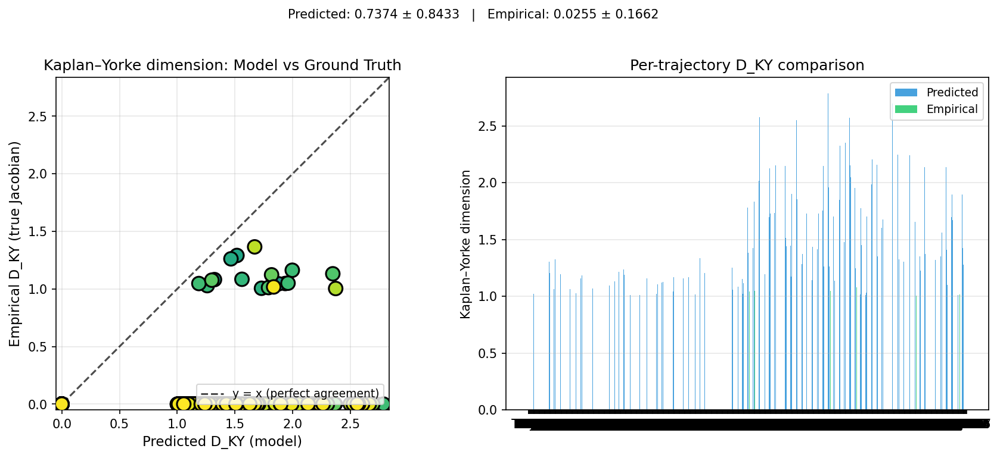
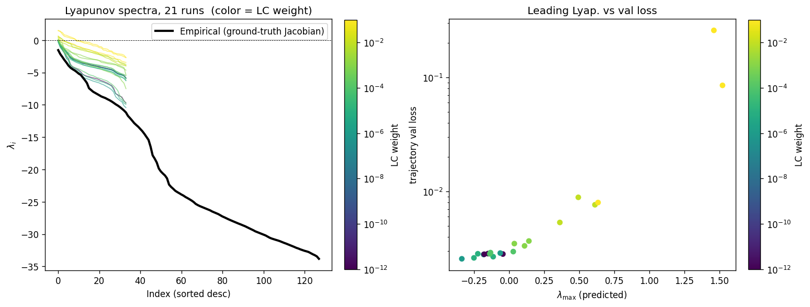
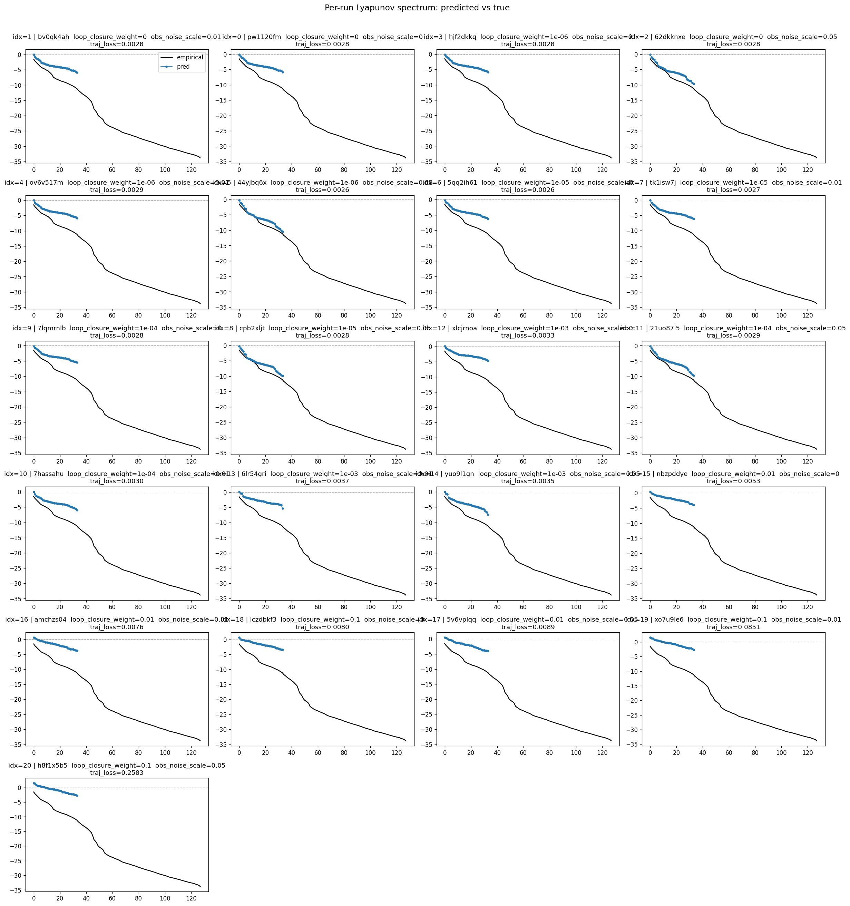
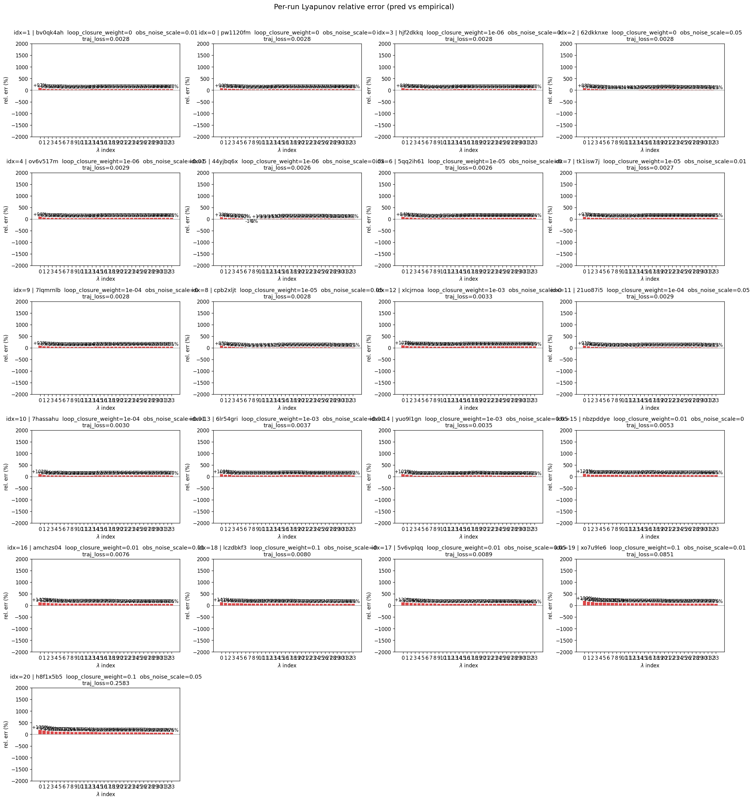
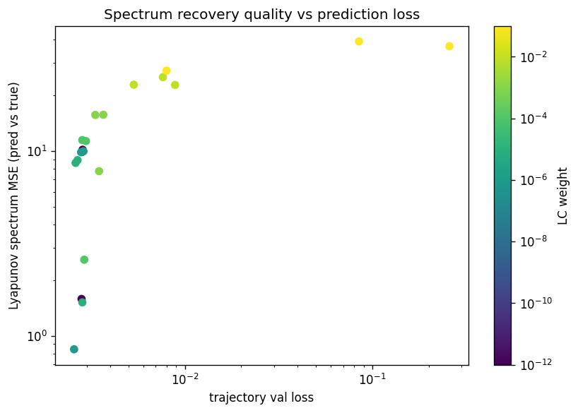
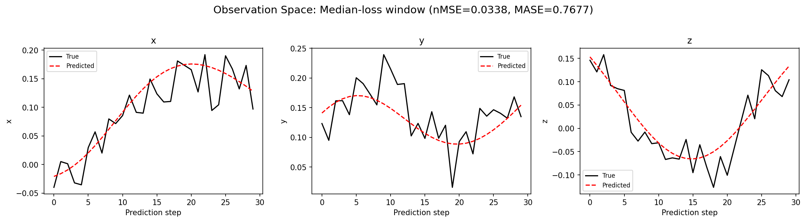
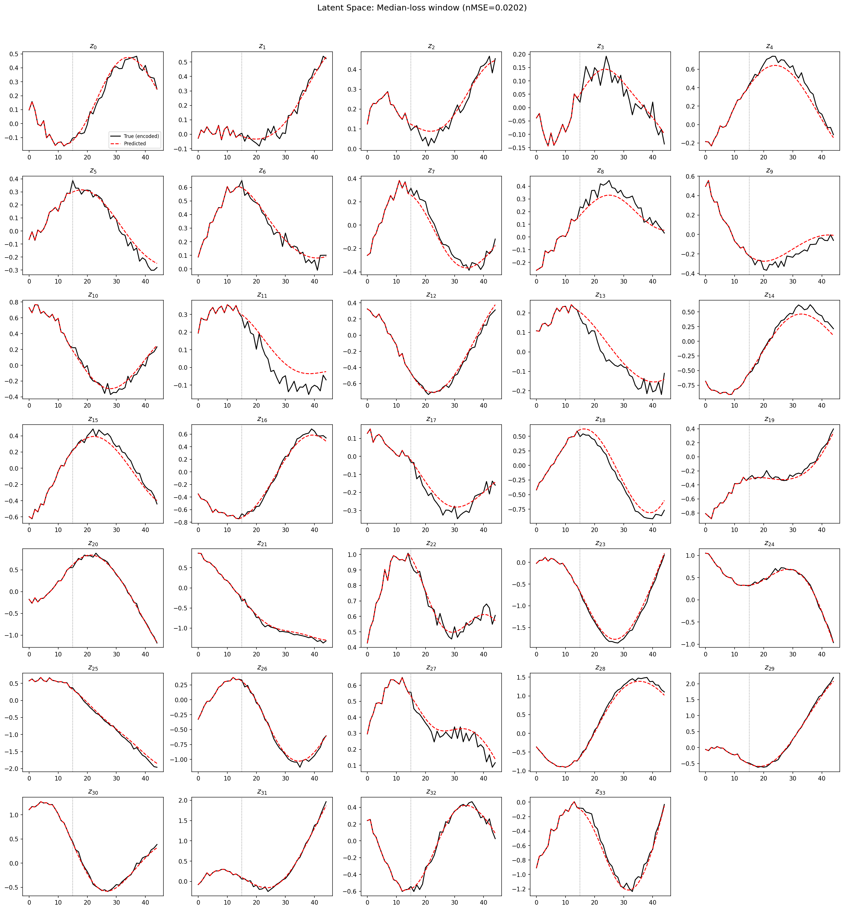
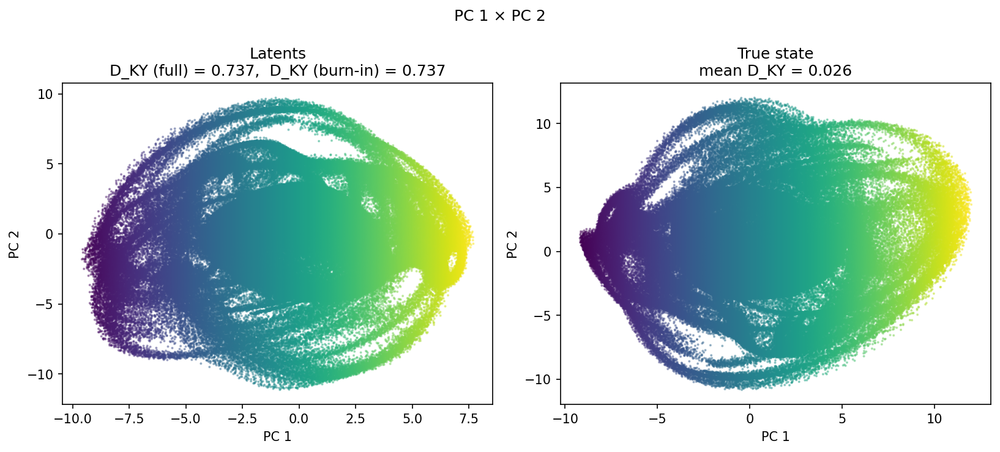
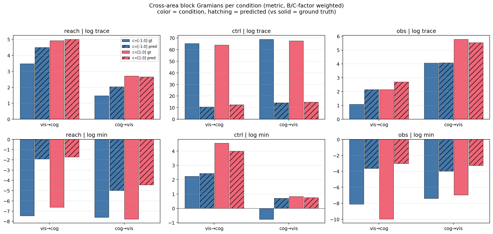
(to be written)